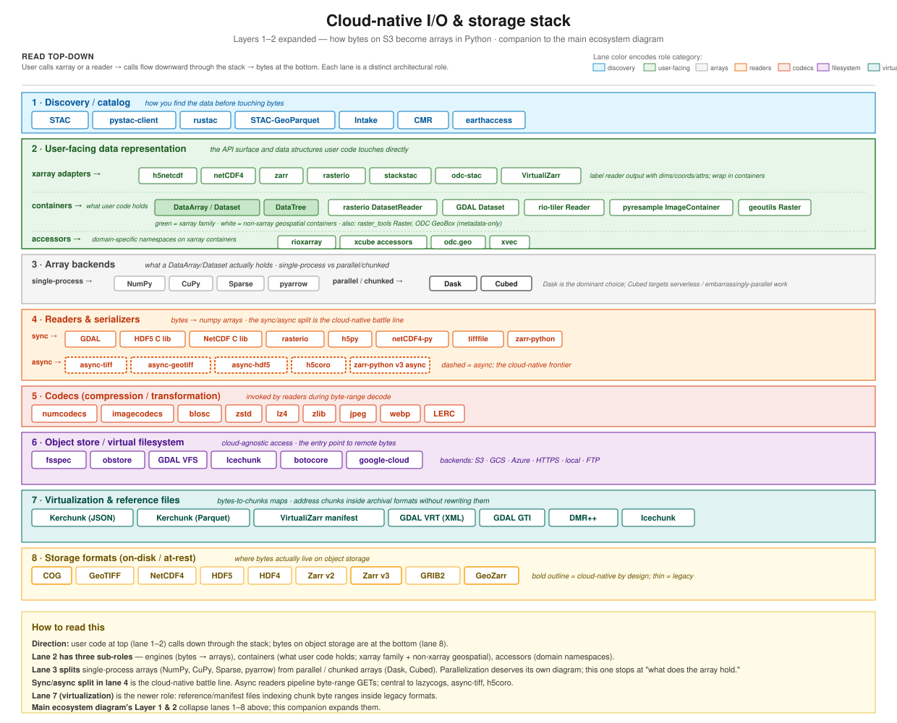

I/O & storage stack
Layers 1–2 expanded — companion to the Ecosystem & Roadmap page
Why this page
The main Ecosystem & Roadmap diagram treats Layers 1 and 2 (bytes and native-grid I/O) as two thin rows. In reality, a lot happens between an S3 object and an xr.open_dataset(...) call. This page expands that region of the stack.
The goal is to make visible: (a) which tools serve which architectural role, (b) where the sync/async divide falls, (c) where virtualization fits relative to formats and readers, and (d) which tools cross roles. If you’re trying to place a new tool or pick between existing ones, this is the page to read first.
The stack

Reading direction
User code sits at the top. A call like xr.open_dataset(store) or rasterio.open(uri) flows downward through the stack:
- Discovery (if you don’t already know the URI): STAC, pystac-client, CMR, earthaccess.
- User-facing data representation: xarray adapters (what the codebase calls “engines”) that label reader output; accessors that add domain-specific namespaces; containers that hold the result.
- In-memory array backends: the actual in-memory representation the DataArray wraps.
- Readers & serializers: C libraries or Python readers that turn bytes into arrays. Sync and async variants diverge here.
- Codecs: invoked by readers to decompress or de-transform byte ranges.
- Object store / virtual filesystem: cloud-agnostic access; sits between readers and the actual storage.
- Virtualization & reference files: byte-range-to-chunk maps that address chunks inside archival formats without rewriting the underlying bytes. Optional layer — only present when virtualization is used.
- Storage formats: what’s at rest on object storage.
The diagram is a reference atlas, not a call graph — not every call visits every lane (virtualization is optional; some codecs are built into format readers; discovery can be skipped when you already have a URI). Treat the layers as slots that may or may not be filled for a given workflow.
What’s genuinely architectural (vs. just a tool choice)
Four observations that the diagram surfaces:
The sync/async split in lane 4 is the cloud-native frontier
Sync readers block on every byte-range GET. Async readers (async-tiff, async-geotiff, async-hdf5, h5coro, zarr-python v3 async) pipeline many GETs concurrently, which matters when latency rather than throughput dominates — i.e., cloud object storage. The async lane’s dashed borders in the diagram mark this newer track.
The two tracks are load-bearing for different workloads. Sync GDAL remains the workhorse for production tile serving, batch ETL, and most of the rasterio / rioxarray ecosystem; its breadth of format support is unmatched. The async entries are clean-room Rust-backed readers that skip GDAL — trading format coverage for tighter control over concurrency and dependencies. lazycogs takes the no-GDAL path explicitly. This is a real architectural divergence, not a style preference, but it isn’t a horse race: most production workflows still ride on sync GDAL.
Virtualization (lane 7) is a genuinely new architectural role
Five years ago the stack was: reader → format. Virtualization inserts a byte-range map between them: reader → virtualization manifest → format. It looks like another format from above (Zarr-compatible interface) and like another client from below (fetches byte ranges from the original file). This is why VirtualiZarr, Kerchunk, and GDAL VRT/GTI are a first-class lane: they’re not a variant of format or reader, they’re an architectural middleman.
Icechunk is a hybrid case — it’s a virtualization format and an object-store-like repository, hence it appears in both lane 6 (object store / VFS) and lane 7.
Two distinct object-store lineages: fsspec and obstore
fsspec is the long-established Python filesystem abstraction; nearly every Python tool that opens a remote URL touches it directly or indirectly, and it is not going anywhere. obstore is a newer Rust-backed, async-first object-store library that pairs naturally with the async readers above it. Most cloud-native projects pick one of the two, and the choice correlates with sync-vs-async readers in lane 4: sync tools generally route through fsspec, async Rust-backed tools generally route through obstore. GDAL’s VFS is a third lineage, architecturally separate because it’s embedded in GDAL.
User-facing data representation (lane 2) has three sub-roles
Lane 2 is the API surface user code touches directly. It covers three sub-roles:
- Xarray adapters (
h5netcdf,netCDF4,zarr,rasterio,stackstac,odc-stac,VirtualiZarr) register via thexarray.backendsentry point. Their distinctive work is labeling: parsing format-specific metadata (HDF5 dimension_scales, GeoTIFF affine transform + CRS, Zarr_ARRAY_DIMENSIONSattrs, CF conventions for_FillValue/ scale / offset) and translating it into xarray’s conventions — dimension names, coordinate arrays, attributes — then wrapping the reader’s output in aDataArrayorDataset. A rasterio reader gives you a(bands, y, x)ndarray plus a transform and CRS string; the rasterio adapter turns that into a DataArray with namedband/y/xdims, coord arrays computed from the transform, and a spatial reference attribute. The interpretation work is the distinctive part — wrapping is the obvious part. Triggered byxr.open_dataset(..., engine=...). (The xarray codebase calls these “engines”; “adapter” is more architecturally accurate because the work is a Gang-of-Four Adapter — bridging one interface to another.) - Containers — the actual data structures users hold and operate on. The xarray family (
DataArray,Dataset,DataTree) plus non-xarray geospatial containers (rasterio.DatasetReader,GDAL.Dataset,rio-tiler.Reader,pyresample.ImageContainer,geoutils.Raster,raster_tools.Raster, and metadata-onlyodc.geo.GeoBox). The non-xarray containers are shown to honestly represent the cloud-native raster ecosystem, not just the xarray world. - Accessors (
rioxarray,xcube accessors,odc.geo,xvec) register via accessor-registration hooks and add namespaces (.rio,.xcube,.odc,.xvec) to xarray containers for domain-specific operations. Invoked as method-like calls:da.rio.reproject(...).
The three patterns are frequently conflated. They’re architecturally distinct:
| Pattern | Registered via | User-facing call | Job |
|---|---|---|---|
| Xarray adapter (= “engine”) | xarray.backends entry point |
xr.open_dataset(engine=...) |
label reader output (dims / coords / attrs) and wrap in containers |
| Container | (core class or third-party class) | construction / receiving from adapters | hold the data |
| Accessor | accessor decorator / entry point | da.NAMESPACE.method() |
add domain-specific methods |
Parallelization (which chunked-array library xarray uses internally — Dask, Cubed) is its own concern and is intentionally out of scope for this diagram; see the parallelization view for that.
stackstac, odc-stac, and VirtualiZarr: adapters that do more
Three adapter entries in Lane 2 aren’t just 1:1 with a Lane-4 reader:
- stackstac and odc-stac are multi-file adapters. They take a list of STAC items and orchestrate many rasterio reads into one lazy, chunked DataArray. They fit the adapter pattern (call readers, label output, wrap in container) but the “call readers” step is plural. In the main ecosystem diagram they’re Layer 3 (loader + read-time warp) — this is the same thing viewed from a different angle.
- VirtualiZarr is an adapter that reads via a manifest (Lane 7). The novel artifact is the manifest format; the adapter is mostly standard zarr-engine plumbing that looks up byte ranges through the manifest before fetching. Listed in both Lane 2 (adapter) and Lane 7 (manifest format).
Why non-xarray containers are drawn
Much cloud-native raster work happens without xarray at all. rasterio.open(...) returns a DatasetReader, not a DataArray. rio-tiler.Reader(...) does similar. GDAL Python bindings return GDAL Datasets. These are first-class data containers with their own read/query/windowing APIs; to show only the xarray family would misrepresent the ecosystem. The green fill on the xarray family boxes marks the xarray sub-group visually; white boxes are non-xarray.
Chunked vs non-chunked array backends (lane 3)
Lane 3’s split matters because it determines how xarray’s containers interact with the underlying arrays:
- Single-process (
NumPy,CuPy,Sparse,pyarrow): the DataArray wraps them directly and operations execute immediately. - Parallel / chunked (
Dask,Cubed): the DataArray wraps a chunked array; operations build a task graph that runs lazily.
How xarray dispatches work to a particular chunked backend is parallelization plumbing, deliberately out of scope for this diagram. A separate parallelization-frameworks view is the right place for that story.
How this maps to the main ecosystem diagram
| In the main Ecosystem diagram | Here in the I/O stack |
|---|---|
| Layer 1 “Bytes & formats” | Lane 8 (formats) + Lane 7 (virtualization) — combined |
| Layer 2 “Native-grid I/O” | Lanes 2, 4, 5, 6 — most of the work happens here |
| Layer 3 “Loader + read-time warp” | Mostly Lane 2 adapters (stackstac, odc-stac, lazycogs) with the warp happening above the I/O stack |
| Layer 4 “Grid math (post-load)” | Above this diagram — consumes xarray, no format/byte concerns |
So the main diagram’s Layer 1–2 is this diagram’s lanes 2–8. Layer 3 loaders are a subset of Lane 2 engines. Layer 4 is above all of this.
Tools that cross lanes
Some tools appear in one primary lane but touch others:
- Icechunk — primarily virtualization (lane 7); also a filesystem interface (lane 6). Listed in both.
- stackstac / odc-stac — xarray engines (lane 2) that internally use GDAL/rasterio (lane 4 sync). Placed in lane 2 as their user-facing role.
- GDAL — C library (lane 4 sync) with its own VFS (lane 6) and VRT/GTI (lane 7). Placed in lane 4 as primary.
- rasterio — Python wrapper on GDAL (lane 4 sync) and an Xarray engine via rioxarray (lane 2). Placed in both.
- VirtualiZarr — both an Xarray engine (lane 2) and produces manifests (lane 7). Placed in both.
The diagram shows primary placement. This list is where to look for cross-lane connections when tracing a specific workflow.
Out of scope for this diagram
- Resampling methods — those live on the main ecosystem diagram (Layers 3 and 4).
- In-memory array operations — basic array math; once you’re in a DataArray, you’re out of this diagram’s scope.
- Specific encoding schemes inside codecs (predictor transforms, filter chains) — this is one level of detail deeper than the diagram aims for.
- Non-Python bindings (Julia, Rust, R, JS) — this diagram is the Python-ecosystem view. Analogous diagrams in other languages would differ.
Further reading
Ecosystem overviews
- Main ecosystem diagram & roadmap — the resampling-centric view this page complements.
- zarr-developers · Resampling-workflows diagram — a broader data-flow view that also covers resampling methods and in-memory representations. Some overlap with this page; different organizing axis.
Standards & specs
- STAC — spatio-temporal asset catalog (lane 1).
- xdggs — DGGS metadata for Zarr (lane 2).
- GeoZarr — rectilinear/CF Zarr metadata (lane 8).
- VirtualiZarr manifest spec — manifest format (lane 7).
- Kerchunk format — reference-file spec (lane 7).
Commentary
- Pangeo lazy-reprojection thread (Sep 2024) — touches on the sync/async readers debate.
- Sean Harkins’ modular-libraries gist — advocates splitting I/O, indexing, and resampling (parts of which this page makes visible).
This page lists pieces by role; placement is informed but opinionated. Corrections and additions welcome via issue or PR at github.com/developmentseed/warp-resample-profiling.